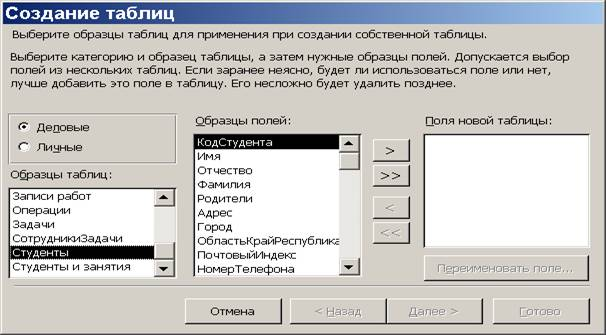
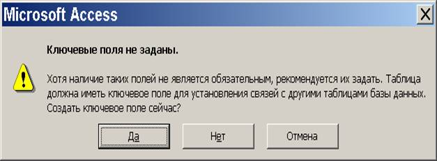
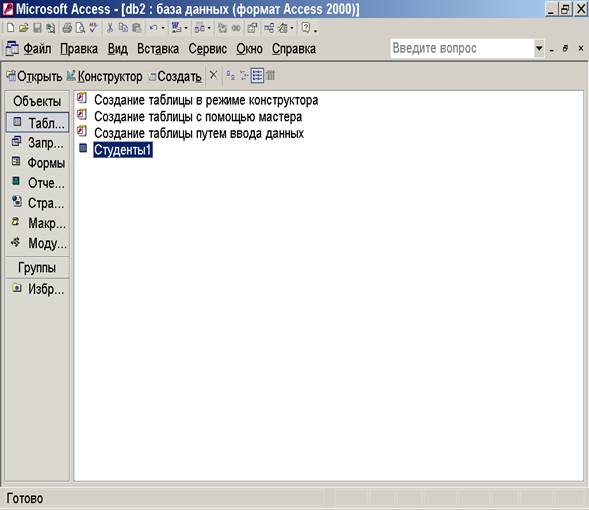

Лабораторная работа № 1. Изучение
структуры MS Access
Цель
занятия: изучение создания таблиц
базы данных, задания их структуры, выбора типов полей и управление их
свойствами. Освоить приемы наполнения таблиц. Освоить приёмы создания
простейших форм.
Порядок
выполнения - на основе лекционного
материала и контекстной помощи MS Access выполнить и описать порядок
выполнения следующих пунктов задания:
1. Запустить программу Microsoft Access
(Пуск ®Программы®Microsoft Access).
2. В окне «Создание» Microsoft Access
включить переключатель Новая база данных и щелкнуть кнопку
ОК.
3. В окне «Файл новой базы данных» выбрать папку своей
группы (если ее нет – создать) и дать файлу имя «Студенты». Убедиться, что в
качестве типа файла выбрано Базы данных Microsoft Access, и щелкнуть кнопку Создать. Откроется окно
новой базы – Студенты: база данных.
4. Построить таблицу «Студенты1» новой БД с помощью
Мастера:
·
выбрать категорию
«Деловые», образец таблицы «Студенты» (рис. 30.1);

Рис. 30.1
·
в качестве
образцов полей использовать поля Код Студента, Фамилия, Имя, Отчество, Адрес (при
необходимости любое выбранное поле может быть переименовано – см. диалоговое
окно);
·
после нажатия на
кнопку Далее ввести имя таблицы «Студенты 1» и нажать кнопку «Готово»;
·
убедиться в
наличии и правильном порядке следования полей созданной таблицы (при
необходимости перемещения поля на новое место необходимо выделить нужное поле
однократным щелчком мыши и затем перетащить название этого поля левой кнопкой
мыши на новое место);
·
заполнить 5-7
записей созданной таблицы данными произвольного содержания;
5. Построить таблицу «Студенты2» новой БД путём ввода
данных:
·
дважды щелкнуть
на значке Создание таблицы путём ввода данных – откроется бланк создания
таблицы. Введите поля, соответствующие таблице, построенной в соответствии с
п.4.;
·
по окончании
ввода имён полей и данных при попытке сохранения новой таблицы либо при попытке
её закрытия MS Access будет задан вопрос об имени созданной таблицы
(«Студенты 2»). После ввода имени на экране появится сообщение:

Рис. 30.2
Если
ключевое поле не было задано, то следует согласиться с поступившим предложением
– этим полем станет поле «Код Студента» - как и в таблице, построенной в ходе выполнения
п.4;
6. Построить таблицу «Студенты3» новой БД в режиме
конструктора:
·
дважды щелкнуть
на значке Создание таблицы в режиме конструктора – откроется бланк
создания структуры таблицы. Введите поля, соответствующие таблице, построенной
в соответствии с п.4.
·
для выбора типа
поля щелкнуть кнопку со стрелкой вниз – раскроется список полей;
·
в случае сомнения
в выбираемых параметрах одновременно открыть на экране таблицу БД «Студенты 1»
в режиме конструктора (с помощью команды Окно - Сверху вниз).
7. Построить автоформу «Студенты 1»: при подсвеченной
иконке таблицы «Студенты 1» (рис. 30.3) выбрать на панели инструментов
СТАНДАРТНАЯ команду Вставка и в открывшемся меню выбрать команду Автоформа.

Рис. 30.3
Убедиться
в наличии необходимых полей. После закрытия автоформы и подтверждения
необходимости сохранения убедиться в появлении среди объектов Формы
формы «Студенты 1».
8. Создать на основе таблицы «Студенты 1» форму «Студенты
2» с помощью Мастера. Перейти в режим конструктора и доработать дизайн
созданной формы по своему усмотрению.
9. Создать на основе таблицы «Студенты 1» форму «Студенты
3» в режиме конструктора. В случае сомнения в выбираемых параметрах
одновременно открыть на экране форму «Студенты 1» (созданную в ходе выполнения
п.8 настоящего Руководства) в режиме конструктора (с помощью команды Окно -
Сверху вниз).